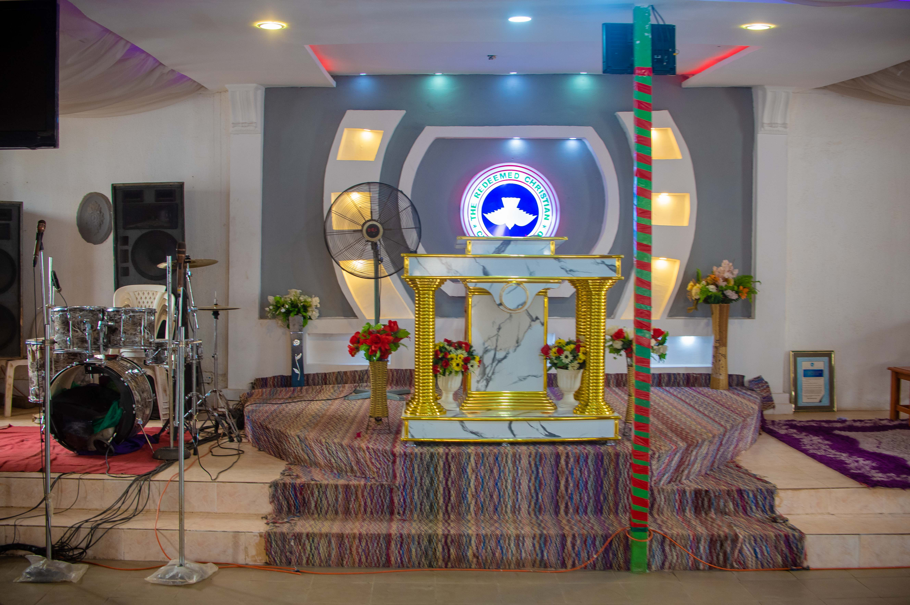
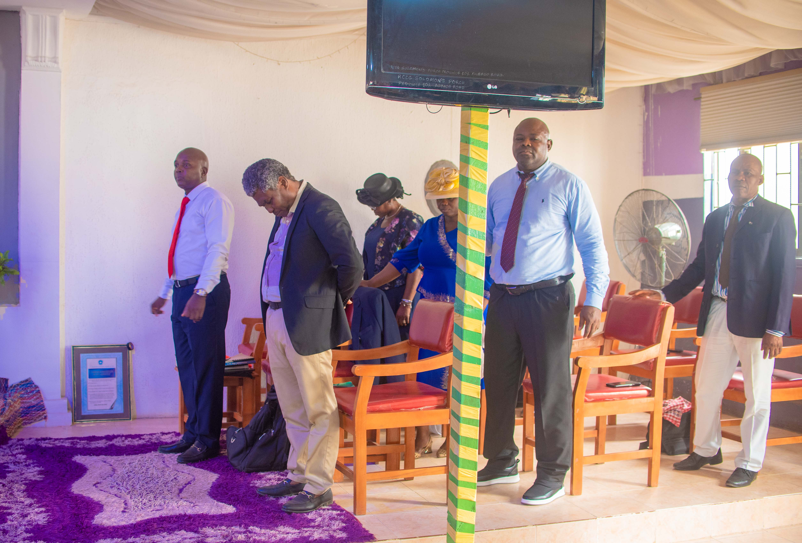
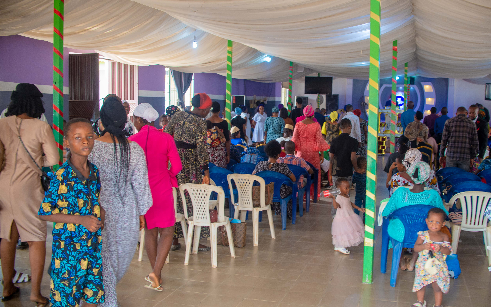
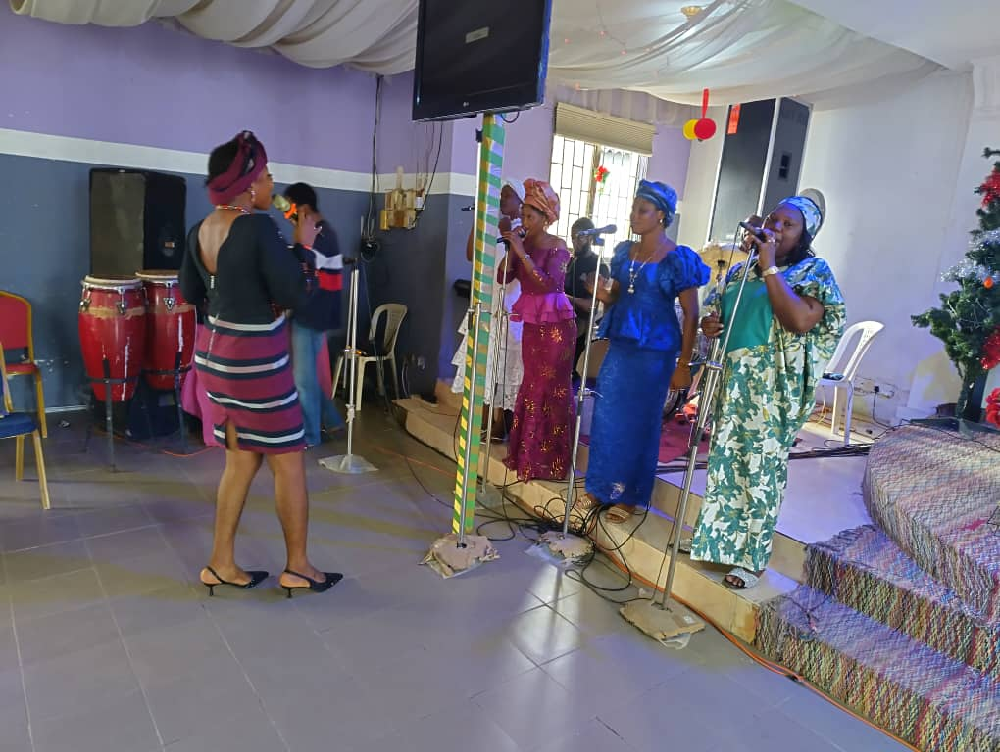
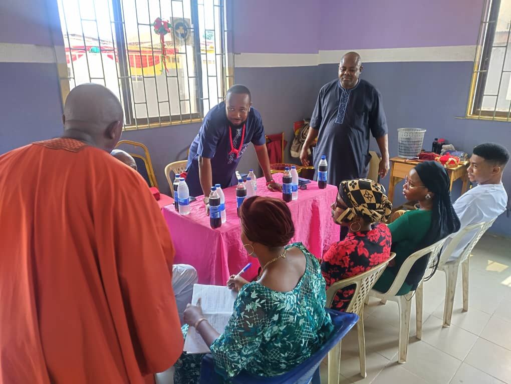
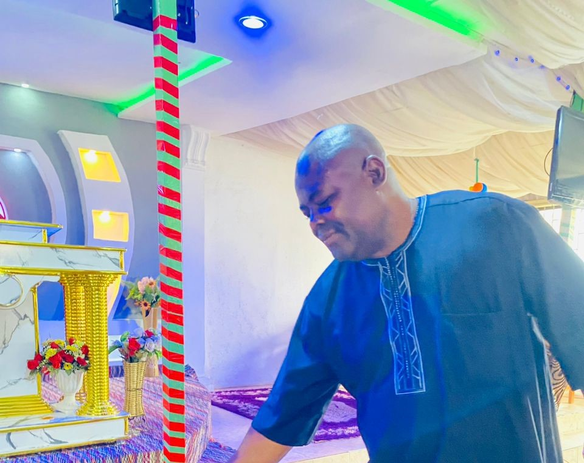
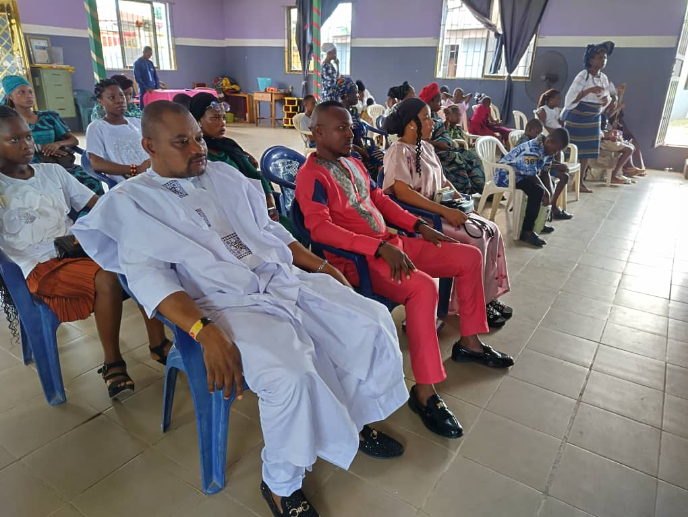
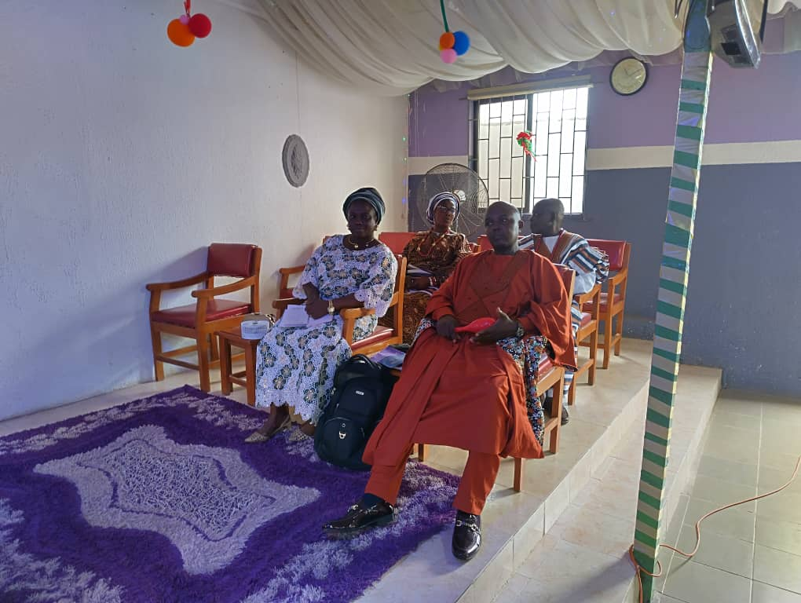

Welcome to RCCG Solomon's Porch
"A place where faith, community, and purpose meet"
-

-

-

Latest Sermons
No sermons yet. Visit the Sermons page to share one.
Excerpts from our services

Choir ministration

Our Bible Study Session

The cool Odogwu Head Usher and brother Tugbobo welcoming the first timers
Featured Talents in Our Community
Talents will appear here. Visit the Talents page to share your skills.
Our Weekly Services
Tuesdays:
Digging Deep from 6:30 - 7:30pm
On Tuesdays, we have what we call Digging Deep but is generally known as Bible Study.
Thursdays:
Faith Clinic from 6:30 - 7:30pm
Join us on Thursdays where we come and table our heart desires to the Father through intense prayer and fellowship.
Sundays:
Sunday Services from 8:30 - 11:30am
Join us for fellowship on Sundays for our main worship service as we gather as one body.
Youth Quarterly Concerts:
Coming up soon so stay tuned for more Information
Join us for our quarterly praise and worship concerts organized by the youth where we worship and praise God in a youthful and gyrating manner
Gallery
Area Mummy and
some of the ministers

Brother Tugbobo

A section of
the congregation
The Odogwu Head Usher
